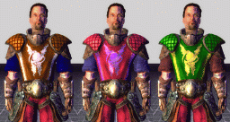
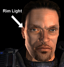
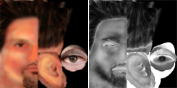
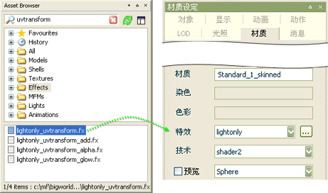
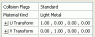
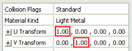
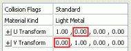
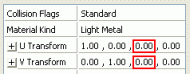
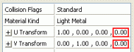
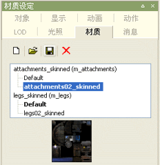

*.fx 文件是用来定义一个对象在游戏引擎中是如何被渲染的方式的.
*.mfm文件是元数据文件, 包括了很多可编辑的艺术特征, 例如 FX , 材质的属性, 贴图使用,模型编辑器可以创建一个新的材质文件并附给模型对象.
 材质属性
材质属性对材质的贴图使用和艺术相关设定,都是在模型编辑器的材质面板下操作, 而每个材质所包含的属性都是由BigWorld材质(.fx)文件定义的.
注: Bigworld 目前仅支持一套UV, 顶点色目前也不支持
下表解释了几个材质中常见的属性描述:
| 属性 | 描述 |
|---|---|
| 碰撞标记 |
|
| 材质种类 |
用设定物体所关联声音和粒子系统.例如,如果你射中木头,那么木材的物体就会发出木质响声, 和散落的木屑效果.
默认设置 (使用 Visual文件的) 的材质种类 |
| Texture Operation | 定义贴图如何叠加的方式. |
| vTransform/uTransform | 这个功能在 创建一个新材质 ,的章节: 创建一个UV滚动材质中有详细介绍. |
| Alpha Reference | 对于使用alphatest的alpha贴图灰色读取只区分0和1两个值,那么在一个0-255的范围内,如果设定值为200,那么引擎默认低于200的区域都为黑,大于200的都是白. |
| Alpha Test | 定义是否启用alphatest |
| Diffuse Light Extra Modulation |
叠加diff贴图的数值, 更多细节参考下面 使用Modulate |
| Double Sided | 定义是否贴图双面显示 |
| Self Illumination | 定义如果物体贴图作为发光体的话,自发光系数 |
| Light Enable | 定义材质是否接收灯光影响. 如果是 False, 那么仅显示贴图原色. |
| Diffuse Map |
定义物体固有色贴图,
贴图每个通道必须是8比特, 格式为t *.bmp 或者
*.tga. |
| Specular Map | 定义高光度的贴图, 白色表示高光. |
| Normal Map |
通过对光影的影响给物体添加细节, 贴图通过通道反映方向, 绿色=为上,红色=右.8-bit的RGB通道格式*.bmp. |
| Sub Surface Map | 定义次级表面颜色的贴图,alpha通道控制次级表面的分布, 文件必须是8比特每个通道的tga文件 |
| Glow Map | 贴图模仿物体的自放光效果, 必须是8bit的RGBA,的*.tga |
| Reflection Map | 模拟物体反射对象的贴图, normalmap_chrome材质支持 .dds 格式的Cube
Maps 作为反射贴图. lightonly_chrome 材质使用 .bmp 格式. |
 材质类别
材质类别文件 bigworld/res/system/data/material_kinds.xml 包含了当前预设的材质类别， 而且也可以自定义修改, 请看下列:
▪ None (Default)无（默认）
▪ Wood木材
▪ Stone石头
▪ Chain链子
▪ Light metal轻金属
▪ Heavy metal重金属
▪ Glass玻璃
▪ Dirt污泥
▪ Grass草
▪ Snow雪
<kind>
<id> 1 </id>
<desc> Wood </desc>
<sound> wood </sound>
<help> Dull surfaces, not very reactive. </help>
<sfx> sets/global/fx/sfx/sfx_pchang_wood.xml </sfx>
</kind>
材质类别允许你通过脚本根据不同的需要针对相关的材质设定不同的声音，特效等。
地形贴图也是可以被赋予 材质类别的
BigWorld材质类型在文件夹
bigworld/res/shaders/std_effects 下有附带的BigWorld制作的常用材质类型文件.
下表解释所有默认的材质(fx)性质和常用规律, 新的FX文件也可以被自己创建添加,但必须使用在BigWorld 模型上.
材质命名解读:
lightonly: 带diffuse通道的贴图
normalmap:携带normal和diffuse贴图通道
_normal: 携带一张永远面相镜头的映射贴图
skinned:软性蒙皮模型,每个顶点接收3个骨骼影响,GPU计算,
Object is affected by pre-calculated static lighting.
glow: 帶glow贴图
chrome: 带cubemap反射贴图
specmap: 带specular高光贴图
colourise: 可已通过mask贴图RGBA通道,给模型变色
add:辨识diffmap的颜色,以additive方式叠加,黑色为透明
skinned: 仅适用于软性蒙皮的模型,分配计算到GPU上,对于带骨骼的模型推荐使用
alpha: 由alpha通道来指定透明属性的材质
uvtransform: 第二张贴图根据第一套UV的布局通过uv运动形成动画贴图效果
uvtransform2:第一套默认贴图和第二套add的贴图都可以通过设置UV位移数据做动画效果
spintoface: billboard类型,材质永远面相镜头
parallax: 带displacement的贴图,存放在normalmap的alpha通道中
distort: 对象的变形由normal map决定,其他还包括 diffuse, and reflection (cube map). 骨骼动画在CPU上计算. Fresnel falloff 和 fresnel constant 控制反射因角度的淡出关系.
Reflection amount 控制了反射cubemap的强度. Distortion scale 定义变形效果的属性,请确保实用normalmap来做变形.推荐使用在玻璃和水上
lightonly_vertexcolour.fx - 对象支持一张diffuse贴图和顶点色. 使用此材质的带骨骼的动画将在CPU上计算,对象受预先计算的静态灯光影响.
lightonly_dual.fx - 对象支持两个diffuse贴图. Diffuse map 1 识别 UV channel 1, diffuse map 2 识别 UV channel 2. 使用此材质的带骨骼的动画将在CPU上计算,对象受预先计算的静态灯光影响.
注意:studinclude材质是作为材质编辑范例的,并非美术使用材质
| 文件 | 描述 | |||||
|---|---|---|---|---|---|---|
normalmap.fx |
Objects with normal and diffuse maps. Bone deformation animations are performed on CPU. Object is affected by pre-calculated static lighting. | |||||
normalmap_skinned.fx |
Objects with normal and diffuse maps. Soft-skinned (each vertex may have up to three bones influencing it) animations are performed on GPU. Object is affected by pre-calculated static lighting. | |||||
normalmap_glow.fx |
Objects with normal, diffuse, and glow maps. Bone deformation animations are performed on CPU. Object is affected by pre-calculated static lighting. | |||||
normalmap_chrome.fx |
Objects with normal, diffuse, and cube reflection maps. Bone deformation animations are performed on CPU. Object is affected by pre-calculated static lighting. | |||||
normalmap_chrome_skinned.fx |
Objects with normal, diffuse, and cube reflection maps. Soft-skinned (each vertex may have up to three bones influencing it) animations are performed on GPU. Object is affected by pre-calculated static lighting. | |||||
normalmap_glow_alpha.fx |
Objects with normal, diffuse (including alpha blend transparency, values of 1 to 256), and glow maps. Bone deformation animations are performed on CPU. Object is affected by pre-calculated static lighting. | |||||
normalmap_chrome_glow.fx |
Objects with normal, diffuse, glow and cube reflection maps. Bone deformation animations are performed on CPU. Object is affected by pre-calculated static lighting. The reflection mask defines areas of reflectivity – white areas are highly reflective, dark areas are not. | |||||
normalmap_glow_skinned.fx |
Objects with normal, diffuse, and glow maps. Soft-skinned (each vertex may have up to three bones influencing it) animations are performed on GPU. Object is affected by pre-calculated static lighting. | |||||
normalmap_specmap.fx |
Objects with normal, diffuse, and specular maps. Bone deformation animations are performed on CPU. Object is affected by pre-calculated static lighting. | |||||
normalmap_specmap_alpha.fx |
Objects with normal, diffuse (including alpha blend transparency, values of 1 to 256), and specular maps. Bone deformation animations are performed on CPU. Object is affected by pre-calculated static lighting. | |||||
normalmap_specmap_chrome.fx |
Objects with normal, diffuse, specular maps and cube reflection maps. Bone deformation animations are performed on CPU. Object is affected by pre-calculated static lighting. | |||||
normalmap_specmap_chrome_skinned.fx |
Objects with normal, diffuse, specular maps and cube reflection maps. Soft-skinned (each vertex may have up to three bones influencing it) animations are performed on GPU. Object is affected by pre-calculated static lighting. | |||||
normalmap_specmap_chrome_glow.fx |
Objects with normal, diffuse, glow maps and cube reflection maps. Bone deformation animations are performed on CPU. Object is affected by pre-calculated static lighting. | |||||
normalmap_specmap_chrome_glow_skinned.fx |
Objects with normal, diffuse, glow maps and cube reflection maps. Soft-skinned (each vertex may have up to three bones influencing it) animations are performed on GPU. Object is affected by pre-calculated static lighting. | |||||
normalmap_chrome_glow_skinned.fx |
Objects with normal, cube reflection and glow maps. Soft-skinned (each vertex may have up to three bones influencing it) animations are performed on GPU. Object is affected by pre-calculated static lighting. | |||||
normalmap_specmap_skinned.fx |
Objects with normal, diffuse, and specular maps. Soft-skinned (each vertex may have up to three bones influencing it) animations are performed on GPU. Object is affected by pre-calculated static lighting. | |||||
colourise_add.fx |
Objects with diffuse map. Bone deformation animations are performed on CPU. Object is affected by pre-calculated static lighting. A single colour picker affects additively the object's existing colour. | |||||
colourise_normalmap_specmap_skinned.fx
|
Objects with diffuse, and mask maps. Soft-skinned (each vertex may have up to
three bones influencing it) animations are performed on GPU. Object is affected
by pre-calculated static lighting. Channels of mask map used to select regions
of diffuse map for colourisation.
This shader is perfect for creating customisable character variations. Each channel of the mask map can define an area to be colourised. Because the shader multiplies the customised colour with the existing diffuse colour, it is best to paint those sections to be colourised with almost 0 saturation (no colour), then brighten them somewhat, as the shader will only make them darker. (See diffuse image below). The  3 colour variations done with the shader
| |||||
distort.fx |
Objects with distortion (normal map), diffuse, and reflection (cube map). Bone deformation animations are performed on CPU. Object is affected by pre-calculated static lighting. The shader contains many editable parameters which can dramatically alter the appearance of the object it is applied to. Fresnel falloff and fresnel constant control the way in which reflections fade off as a function of the viewing angle. Reflection amount controls the reflectivity of the object, or how much of the cube map is displayed on the object's surface. Distortion scale controls how strong the distortion map affects the scene behind the object – be sure to use a normal map as the distortion map. This shader is great for semi-transparent objects that will distort the scene behind them. The classic example is stained glass or water. Alpha test option will only work when the Use Diffuse Map option is set to True | |||||
lightonly.fx |
Objects with a diffuse map (including alpha test transparency, values of 1 or 0 only). Bone deformation animations are performed on CPU. Object is affected by pre-calculated static lighting. | |||||
lightonly_alpha.fx |
Objects with a diffuse map (including alpha blend transparency, values of 1 to 256). Bone deformation animations are performed on CPU. Object is affected by pre-calculated static lighting. | |||||
lightonly_chrome.fx |
Objects with a diffuse map and transparency (within alpha blend, values of 1 to 256). Bone deformation animations are performed on CPU. Object is affected by pre-calculated static lighting. The alpha map of the diffuse channel defines areas of reflectivity – white areas are highly reflective, dark areas are not. | |||||
lightonly_chrome_add.fx |
Objects with diffuse and additive reflective map. The combined diffuse and reflection map adds to the background. Used in special effects, explosions, and glass windows. Bone deformation animations are performed on CPU. Object is affected by pre-calculated static lighting. The alpha map of the diffuse channel defines areas of reflectivity – white areas are highly reflective, dark areas are not. | |||||
lightonly_chrome_alpha.fx |
Objects with diffuse (including alpha blend transparency, values of 1 to 256) and reflection map. Bone deformation animations are performed on CPU. Object is affected by pre-calculated static lighting. | |||||
lightonly_vertexcolour.fx |
Objects with a diffuse map and vertex colourisation support. Bone deformation animations are performed on CPU. Object is affected by pre-calculated static lighting. | |||||
lightonly_dual.fx |
Objects with two diffuse maps. Diffuse map 1 uses UV channel 1, diffuse map 2 uses UV channel 2. Bone deformation animations are performed on CPU. Object is affected by pre-calculated static lighting. | |||||
lightonly_glow.fx |
Objects with diffuse and glow map. Bone deformation animations are performed on CPU. Object is affected by pre-calculated static lighting. | |||||
lightonly_glow_alpha.fx |
Objects with diffuse map (including alpha blend transparency, values of 1 to 256), and glow map. Bone deformation animations are performed on CPU. Object is affected by pre-calculated static lighting. | |||||
lightonly_normal |
Objects with diffuse map, and an additive texture projected from the camera space normals. Bone deformation animations are performed on CPU. Object is affected by pre-calculated static lighting. | |||||
lightonly_normal_add.fx |
Objects with diffuse map, and an additive texture projected from the camera space normals. Blends additively with the background. Bone deformation animations are performed on CPU. Object is affected by pre-calculated static lighting. | |||||
lightonly_normal_alpha.fx |
Objects with diffuse map (including alpha blend transparency, values of 1 to 256), and an additive texture projected from the camera space normals. Bone deformation animations are performed on CPU. Object is affected by pre-calculated static lighting. | |||||
lightonly_projection.fx |
Objects with diffuse map, and an additive reflection texture mapped from world space. World space texture will stay still even as object moves around the world. Bone deformation animations are performed on CPU. Object is affected by pre-calculated static lighting. | |||||
lightonly_projection_add.fx |
Objects with diffuse map, and an additive reflection texture mapped from world space. World space texture will stay still even as object moves around the world. Blends additively with background. Bone deformation animations are performed on CPU. Object is affected by pre-calculated static lighting. | |||||
lightonly_projection_alpha.fx |
Objects with diffuse map (including alpha blend transparency, values of 1 to 256), and an additive texture mapped from world space. World space texture will stay still even as object moves around the world. Bone deformation animations are performed on CPU. Object is affected by pre-calculated static lighting. | |||||
lightonly_skinned.fx |
Objects with diffuse map. Soft-skinned (each vertex may have up to three bones influencing it) animations are performed on GPU. Object is affected by pre-calculated static lighting. | |||||
lightonly_uvtransform.fx |
Objects with diffuse map, and an additive texture with rolling UVs. Bone deformation animations are performed on CPU. Object is affected by pre-calculated static lighting. | |||||
lightonly_uvtransform_add.fx |
Objects with diffuse map, with rolling UVs. Blends additively with the background. Bone deformation animations are performed on CPU. Object is affected by pre-calculated static lighting. | |||||
lightonly_uvtransform_alpha.fx |
Objects with diffuse map (including alpha blend transparency, values of 1 to 256), and an additive texture with rolling UVs. Bone deformation animations are performed on CPU. Object is affected by pre-calculated static lighting. | |||||
lightonly_uvtransform2.fx |
Objects with diffuse map, and an additive texture with rolling UVs. Primary diffuse map also has rolling UVs. Bone deformation animations are performed on CPU. Object is affected by pre-calculated static lighting. | |||||
lightonly_uvtransform2_add.fx |
Objects with diffuse map, with rolling UVs .Primary diffuse map also has rolling UVs. Blends additively with the background. Bone deformation animations are performed on CPU. Object is affected by pre-calculated static lighting. | |||||
lightonly_uvtransform2_alpha.fx |
Objects with diffuse map (including alpha blend transparency, values of 1 to 256), and an additive texture with rolling UVs. Primary diffuse map also has rolling UVs. Bone deformation animations are performed on CPU. Object is affected by pre-calculated static lighting. | |||||
lightonly_add |
Objects with diffuse map, and an additive texture. Bone deformation animations are performed on CPU. Object is affected by pre-calculated static lighting. | |||||
parallax_lighting_specmap.fx |
Objects with diffuse, normal, specular, and displacement (height) maps. Displaces UV coordinates as a function of the heightmap away from the camera view. Gives the appearance of 3D geometry. Best used on flat/semi-flat objects, such as brick walls. Commonly referred to as parallax or displacement mapping. Bone deformation animations are performed on CPU. Object is affected by pre-calculated static lighting. Note: The displacement map is stored in the alpha channel of the normal map. | |||||
shimmer.fx |
A transparent heat like shimmer effect, commonly seen above heat sources. Alpha channel defines localised shimmer intensity. The opacity parameter affects the overall intensity. Requires a diffuse map. Bone deformation animations are performed on CPU. Object is not affected by pre-calculated static lighting. | |||||
spintoface_add.fx |
Objects with diffuse map. Blends additively with the background. Object will spin to face the camera. Bone deformation animations are performed on CPU. Object is not affected by pre-calculated static lighting. | |||||
stdinclude.fx |
Utility FX file not used by artists – it has components referenced by all other FX files. | |||||
subsurface_skinned.fx
|
Objects with diffuse, specular, and sub surface maps. The skinned
version performs soft-skinning on GPU (each vertex may have up to three bones
influencing it).
This advanced shader uses the angle of light and camera to simulate the sub-surface scattering that occurs when light enters skin. It also simulates rim/bounced lighting, by increasing the luminance of the side of the model facing away from the primary light source. The amount of the sub-surface scattering is controlled by the alpha channel of the sub surface map, and its colour is controlled by the RGB channels.  As well as simulating sub-surface scattering, these shaders simulate bounced light on the non-illuminated side of the object. The rim lighting strength and angle is controlled by the Rim Strength and Rim Width settings. When painting a sub surface map for human skin, consider the thickness of the surface – thicker parts end up dark red, while membranes and areas next to bone end up light orange. Gradient of colour used to define areas – from thicker areas (left) to thinner membranes (right)  Example sub surface map and its alpha channel Areas of thick skin and flesh are dark red, while areas close to the bone are light orange. Dark areas of the alpha map (such as the hair and beard) reduce the amount of sub-surface scattering. |
Multiple UV's and Vertex Colour BigWorld支持MAYA和3Dmax导出, 多个UV通道贴图和顶点色信息.
材质 lightonly_dual.fx 支持多重UV's 并且更是一个范例, 供你们团队编写自己的多重UV材质来參考
材质 lightonly_vertexcolour.fx 支持顶点色信息, 并且也做为你们自己编写顶点色材质的范例參考.
天空盒材质 关于天空材质的资料请查看 这里
如何挑选合适的材质挑选材质前请注意以下问题:
 我要用normalmap么?还是只要平的光效?
我要用normalmap么?还是只要平的光效?
带有 normalmap 的材质会利用normalmap来计算她门的光效, 而lightonly的材质,直接使用默认光计算.
我是否要用发光, 反射,或是动画UV的效果 - Glow,
Chrome, Rolling UVs?
带有 glow 的材质会计算一个自放光的值, 带有 chrome的材质会计算一个反光的cubemap, 带有uvtransform的材质会计算滚动UV的共同作用效果, 这些都是会影响一定计算效率的, 请有计划的使用.
我的透明方式是要用 Alpha Test
还是 Alpha Blend?
带 alpha 在名称中的材质,根据自己的diffmap 中的alpha通道给出半透明效果, 值从1 到 256 (8-bit).
请注意,很多名称中没有alpha的材质,都包含了alphatest属性, 它可以给出一个0/1的alpha值, (1bit). 可以根据alpha ref的设置调整. 如果把 alpha ref 设置成为128, 则所有比128小的灰度值,被认为是0(全透明), 而大于128的被认为是1(不透明)
你的模型有没有很多互相交错的结构? 在使用alphablend的时候,这样的模型容易导致渲染乱序问题.
带有 Alpha blended 的材质都不使用GPU, 所以如果使用alpha blend 和skinned 一起, 则所有动画在CPU上计算, 这回影响游戏速度(变慢).
如果效果相似, 请尽量使用alpha test,如果使用blend会大大影响游戏效率.
我需要使用skinned材质, 还是静态材质?
带有 skinned 材质做柔性骨骼绑定 (每个顶点最多受3个骨骼影响), 在GPU上计算, 物体在3d软件中带有 Skin, Physique,
Skinning 编辑器的,都必须使用 skinned 材质
在选择材质给骨骼绑定物体时要非常当心, 你必须使用 skinned 材质 骨骼的运动计算在GPU执行, 这样 (比在CPU)更有效,更快. 如果强迫CPU计算动画信息, 游戏效率很难保证.
是不是会造成游戏效率低的问题?
这是最关键的问题, 至少是你必须思考的问题. 带有更多信息的高级材质(例如使用了normal, subsurface, 和parallax贴图的) 会占有更多的计算, 所以和常用的简单的材质多做比较, 合理的使用高级材质才对.
是否需要新建自己的材质?
最后, 我们不可能提供所有需要的材质类型, 因为这样的材质可以列出无限多. 多数的客户会自己编写一些特有效果的材质来满足自己的需要.
如何在模型编辑器中使用材质在模型编辑器 Asset Browser面板下, 选择 Effects 文件夹, 这里有所有的 BigWorld 材质类型
要给模型使用材质, 只要把你需要的fx文件拖到材质面板下,effect属性框下拉列表中.

BigWorld 材质可以在 3dsMax中直接应用为材质球, ( Maya不支持此功能). 次功能参见 在maya 和 max 中创建静态物体并导出/ 直接在3ds Max 中使用bigworld材质球 章节
创建一个 UV 滚动材质带有 uvtransform 的材质,例如
lightonly_uvtransform.fx, 可以创建一个UV滚动的效果. 要创建这样的效果,先拖动一个带 uvtransform 材质到 材质面板下Effects 下拉菜单.

在材质面板下, 双击 Transform Map 选择你想要做滚动效果的贴图. 你可以在 Asset Browser面板中选一个材质.
矢量属性来控制uv滚动的 平铺, 位移,速度和方向.
UV 平铺是U Transform 的第一项 和V Transform 的第二项控制的, 值为二的话表示,在原范围内,贴图平铺两次

旋转 UV 坐标在 U Transform 第二项和 V Transform 的第一项中设置

速度在 U Transform和 V Transform 的第三项中设置

起始的 UV 位置由 U Transform 和 V Transform 的第四项控制

保存一个材质 MFM 文件现有模型的材质可以被保存为 .mfm文件, 这样你可以使用相同的材质到不同模型上.
1 选择材质面板
2 选择你要保存的材质

3 点击 , 打开一个保存对话框
4 在另存为 Save As 对话框中, 定义你要保存的路径和文件名, 点击保存save即可.
要应用一个 MFM 文件到模型点击 打开浏览需要的mfm材质文件即可.
Copyright 1999-2010 BigWorld Pty. Ltd. All rights reserved. Proprietary commercial in confidence.